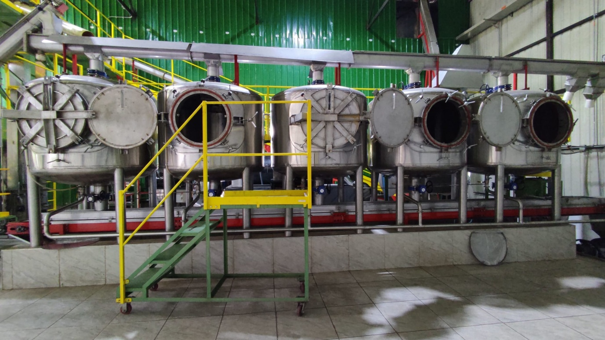

En un coup d'œil :
Process où on soumet les cerises à des alternances chaud/froid pendant la fermentation. Le choc thermique stimule la libération d'enzymes intracellulaires et la formation d'esters. Résultat : profils fruités intenses (fruits jaunes, tropical), acidité vive mais équilibrée, texture soyeuse. C'est le café "secoué", où le stress thermique devient créativité aromatique.
Comprendre : Le stress comme outil
Le principe du choc thermique
Définition technique :
On alterne des phases chaudes (45–55°C) et froides (8–12°C) pendant la fermentation, créant un stress physiologique qui force les cellules du fruit à libérer leurs composés aromatiques.
Ce qui se passe :
•Phase chaude : Les cellules "ouvrent" leurs membranes, libèrent enzymes et précurseurs
•Phase froide : Stabilisation rapide, préservation des composés libérés
•Alternance : Chaque cycle accumule arômes sans dégradation excessive
C'est inspiré de techniques agricoles (hardening des plants) et œnologiques (cryo-macération + thermovinification).
Thermal Shock vs Anaérobie classique
| Critère | Anaérobie classique | Thermal Shock |
|---|---|---|
| Température | Stable (18–24°C) | Alternée (8–55°C) |
| Stress cellulaire | Faible | Élevé (contrôlé) |
| Libération enzymatique | Normale | Forcée par choc |
| Esters formés | Modérés | Très élevés |
| Acidité | Lactique douce | Vive, phosphorique |
| Profil | Vineux, fermenté | Fruits jaunes, tropical intense |
En clair : Le choc thermique "secoue" le fruit pour extraire un maximum d'arômes en minimum de temps.
Pourquoi ce process existe
Le constat scientifique :
Des études en œnologie et post-récolte (fruits/légumes) montrent que les chocs thermiques déclenchent des mécanismes de défense cellulaire :
•Libération massive d'enzymes (β-glucosidases, pectinases)
•Production d'esters de stress (composés volatils)
•Transformation rapide sucres → acides → alcools
Adaptation au café (2018+) :
Producteurs expérimentaux (Colombie, Costa Rica) appliquent ce principe :
•Alternance bain chaud/froid pendant fermentation
•Création profils fruités intenses et reproductibles
•Moins de risques que fermentations très longues
Innovation technique : Permet d'obtenir profils CM-like en 48–72h au lieu de 72–96h.
Maîtriser : Le protocole technique
Phase 1 : Récolte et préparation
Objectif : Cerises mûres (≥18 °Brix), structure cellulaire intacte
⚠️ CRITIQUE : Le choc thermique nécessite des cellules viables pour réagir au stress.
Tri ultra-rigoureux :
•Flottaison : éliminer flottants
•Visuel : retirer surmûries, abîmées (membranes compromises)
•Test fermeté : cerises fermes mais mûres (pas molles)
Choix du substrat :
•Cerises entières (recommandé) → membranes cellulaires intactes, réponse optimale
•Dépulpé (possible mais moins efficace)
Phase 2 : Fermentation initiale (amorçage)
Protocole :
•Placer les cerises en cuve (semi-hermétique ou anaérobie)
•Démarrer fermentation normale 12–24h à 20–24°C
•Objectif : Activer levures/bactéries, pH descend à 5,0–5,2
Pourquoi cette étape ?
Sans fermentation initiale, le choc thermique seul est inefficace. Il faut d'abord créer un écosystème microbien actif qui va ensuite réagir au stress.
Indicateurs d'amorçage réussi :
•pH : 5,5 → 5,0–5,2
•Odeur : fruité léger apparaît
•Température : +1–2°C (exothermie levures)
Phase 3 : Premier choc thermique (CHAUD)
Protocole bain chaud :
•Préparer eau chaude : 45–55°C (contrôle précis thermomètre)
•Immerger les cerises dans le bain pendant 5–10 minutes
•Brasser doucement pour homogénéiser température
•Retirer immédiatement après durée cible
Température cible :
| Plage T° | Effet | Risque |
|---|---|---|
| 45–50°C | ✅ Optimal : stress modéré, libération enzymatique | Faible |
| 50–55°C | Stress élevé, libération maximale | Moyen (risque cuisson) |
| >55°C | ❌ Cuisson enzymatique (baked) | Élevé |
Durée immersion :
•5 min : Stress léger
•7–8 min : ✅ Optimal
•>10 min : Risque cuisson
Ce qui se passe biologiquement :
Réaction cellulaire au chaud (45–55°C) :
•Stress membranaire :
•Les membranes cellulaires deviennent perméables
•Libération massive de contenu intracellulaire (enzymes, sucres, acides)
•Activation enzymatique :
•β-glucosidases → libèrent terpènes (linalol, géraniol)
•Pectinases → dégradent paroi cellulaire
•Lipoxygenases → formation aldéhydes fruités
•Production esters de stress :
•Les cellules produisent des esters volatils comme mécanisme de défense
•Éthyl-hexanoate (pomme, fruit jaune)
•Hexyl-acétate (fruit vert, tropical)
•Transformation sucres :
•Accélération métabolisme : sucres → alcools + acides
•Formation acide malique (acidité vive)
⚠️ Limite : Au-delà de 55°C, les enzymes se dénaturent (meurent) → effet inverse (baked).
Phase 4 : Premier choc thermique (FROID)
Immédiatement après le bain chaud :
•Plonger les cerises dans bain froid 8–12°C
•Durée : 10–15 minutes (plus long que chaud)
•Brasser pour homogénéiser
•Retirer et égoutter
Température cible :
| Plage T° | Effet |
|---|---|
| 8–12°C | ✅ Optimal : stabilisation sans ralentir fermentation |
| <8°C | Ralentissement excessif fermentation |
Ce qui se passe biologiquement :
Réaction cellulaire au froid (8–12°C) :
•Stabilisation rapide :
•Les membranes cellulaires se referment partiellement
•Les composés libérés sont piégés dans le mucilage/jus
•Préservation aromatique :
•Les esters volatils formés pendant phase chaude ne s'évaporent pas
•Les terpènes restent stables (pas de dégradation)
•Ralentissement métabolique :
•Activité microbienne ralentit (levures/bactéries en dormance)
•Mais les enzymes restent actives (transformation continue lentement)
•Effet cumulatif :
•Les arômes formés pendant phase chaude s'accumulent
•Pas de sur-fermentation (risque sour limité)
Phase 5 : Retour fermentation ambiante + cycles répétés
Protocole :
•Retourner les cerises en cuve de fermentation (20–24°C)
•Poursuivre fermentation 12–24h
•Répéter cycles chaud/froid :
•Cycle 1 : après 12–24h fermentation initiale
•Cycle 2 : après 24–36h (optionnel)
•Cycle 3 : après 48–60h (rare, risque excessif)
Nombre de cycles recommandé :
| Cycles | Intensité aromatique | Risque | Usage |
|---|---|---|---|
| 1 cycle | Modérée | Faible | Début, sécuritaire |
| 2 cycles | ✅ Élevée, équilibrée | Moyen | Optimal |
| 3+ cycles | Très élevée | Élevé (phenolic, swampy) | Expérimental |
Phase 6 : Fin fermentation et lavage
Durée totale typique :
•1 cycle : 36–48h total
•2 cycles : 48–72h total
Indicateurs de fin :
•pH stabilisé 4,0–4,5
•Odeur : fruité intense (fruits jaunes, tropical), pas vinaigre
•Test tactile : mucilage liquéfié
Lavage standard :
•Drainer liquide fermentation
•Laver eau claire abondamment
•Rincer jusqu'à disparition mucilage
•Égoutter
Phase 7 : Séchage post-thermal shock
Important : Grain chargé en esters volatils ultra-fragiles (formés par stress).
Paramètres :
| Phase | Durée | T° max | Brassage |
|---|---|---|---|
| Initiale | 2–3 j | 28°C | 5–6×/jour |
| Intermédiaire | 3–5 j | 32°C | 4×/jour |
| Finale | 2–4 j | 35°C | 2×/jour |
Vitesse : <1,0% H₂O/jour (lent)
Méthode : Lits africains sous ombre partielle (préserver esters)
Phase 8 : Repos en parche
Durée : 6–8 semaines
Objectif :
•Stabilisation esters de stress (polymérisation)
•Maturation acidité vive (intégration malique)
•Équilibrage profil fruité intense
Approfondir : Chimie du stress thermique
Molécules clés formées par choc thermique
Le Thermal Shock se distingue par une production massive d'esters légers et d'aldéhydes fruités, avec acidité malique élevée.
| Molécule | Famille | Arôme | Thermal Shock vs Anaérobie |
|---|---|---|---|
| Éthyl-hexanoate | Ester | Pomme verte, fruit jaune | 5–8× supérieur |
| Hexyl-acétate | Ester | Fruit tropical, poire | 3–5× supérieur |
| Éthyl-butanoate | Ester | Ananas, mangue | 3× supérieur |
| Acide malique | Acide | Acidité vive, pomme | 2–3× supérieur |
| Linalol | Terpène | Floral, fruits jaunes | 2× supérieur |
| Hexanal | Aldéhyde | Herbe fraîche, fruit vert | Élevé |
| 2-Méthylbutanal | Aldéhyde | Fruit jaune, tropical | Présent |
Molécules quasi absentes :
•Acide lactique (peu de bactéries lactiques favorisées)
•Furaneols lourds (pas assez de temps/température)
•Composés soufrés (process court, contrôlé)
Pourquoi le profil est unique
Stress thermique → activation enzymatique forcée → libération terpènes + formation esters
Alternance chaud/froid → accumulation arômes sans dégradation
Acidité malique → transformation métabolique accélérée (chaud)
Esters de stress → mécanisme défense cellulaire → notes tropicales intenses
Résultat : Profil fruits jaunes/tropical intense, acidité vive phosphorique, texture soyeuse.
Profil sensoriel — L'intensité contrôlée
| Attribut | Anaérobie | CM | Thermal Shock |
|---|---|---|---|
| Fruité jaune/tropical | ⭐⭐⭐ | ⭐⭐⭐⭐ | ⭐⭐⭐⭐⭐ |
| Acidité vive | ⭐⭐⭐ | ⭐⭐⭐⭐⭐ | ⭐⭐⭐⭐⭐ |
| Floral | ⭐⭐ | ⭐⭐⭐⭐⭐ | ⭐⭐⭐⭐ |
| Texture soyeuse | ⭐⭐⭐ | ⭐⭐⭐⭐ | ⭐⭐⭐⭐⭐ |
| Corps | ⭐⭐⭐⭐ | ⭐⭐⭐ | ⭐⭐⭐ |
| Reproductibilité | ⭐⭐⭐ | ⭐⭐⭐⭐ | ⭐⭐⭐⭐ |
Descripteurs typiques d'un Thermal Shock réussi :
•Fruits jaunes intenses : pomme verte, poire, abricot, fruits tropicaux (ananas, mangue)
•Acidité phosphorique vive : brillante, électrique (malique dominant)
•Texture soyeuse : velours en bouche, pas de rugosité
•Floral léger : terpènes libérés (linalol), notes jasmin/agrumes
•Finale longue : persistance fruité jaune + acidité
•Équilibre : intense mais harmonieux (pas agressif)
En tasse, un Thermal Shock est reconnaissable : explosion fruits jaunes, acidité vive mais soyeuse, texture veloutée, finale brillante.
En pratique : Roast tips pour Thermal Shock
Comportement du grain
Particularité : Concentration élevée d'esters volatils de stress + acidité malique → besoin équilibre préservation/intégration.
Conséquence : Torréfaction modérée avec développement équilibré pour préserver fruits jaunes tout en intégrant acidité vive.
Profil recommandé (base Loring)
Charge : 190–195°C
↓
Drying : 4–5 min, ROR 20–24°C/min progressif
→ évaporer eau SANS volatiliser esters de stress
↓
Maillard : 25–30%, ROR 10–14°C/min constant
→ développer structure, équilibrer acidité
↓
Premier Crack : 198–202°C
↓
Développement : 11–13% (moyen)
→ ROR 5–7°C/min, descente contrôlée
→ intégrer acidité malique sans la détruire
↓
Drop : 200–204°C (filtre/espresso léger)
Pourquoi ce profil spécifique
| Phase | Justification |
|---|---|
| Charge modérée | Préserver esters volatils de stress (fragiles) |
| Maillard moyen | Équilibrer fruité + structure sans masquer |
| Développement moyen | Intégrer acidité malique vive (pas trop court = agressif, pas trop long = plate) |
| Drop moyen | Révéler fruits jaunes sans caraméliser excessivement |
Principe : On cherche l'équilibre entre vivacité (acidité malique) et rondeur (développement).
Deux profils selon usage
Filtre — Vivacité maximale
Drop : 200–202°C
Développement : 11–12%
Résultat : Fruits jaunes explosifs, acidité phosphorique brillante, texture soyeuse
Espresso léger / Omni
Drop : 202–204°C
Développement : 12–13%
Résultat : Fruits jaunes intenses, acidité vive mais intégrée, corps léger-moyen
⚠️ Thermal Shock et espresso traditionnel : Délicat. L'acidité malique peut être agressive en espresso classique. Privilégier ratios allongés (1:2,5 ou 1:3).
Erreurs fréquentes
| Erreur | Symptôme | Correction |
|---|---|---|
| Sous-développement (<10%) | Acidité agressive, déséquilibré | Développer 11–13% |
| Drop trop tardif (>206°C) | Fruits jaunes caramélisés, perte vivacité | Drop 200–204°C |
| Maillard trop long (>35%) | Fruité masqué, acidité plate | Réduire 25–30% |
| Charge trop chaude (>200°C) | Esters de stress brûlés | Baisser 190–195°C |
Point clé : Le Thermal Shock a une acidité malique dominante. Il faut un développement suffisant (11–13%) pour l'intégrer sans la détruire.
Les risques et défauts du Thermal Shock
Défauts liés au process
| Défaut | Cause | Molécules | Notes | Prévention |
|---|---|---|---|---|
| Baked (cuit) | Bain chaud >55°C ou >10 min | Enzymes dénaturées | Céréale cuite, plat | T° 45–50°C, 5–8 min max |
| Phenolic | T° chaud excessive + contamination | Crésols, guaiacol | Médicinal, chimique | T° <55°C, hygiène |
| Swampy | Cycles excessifs (>3) ou T° ambiante >26°C | Acide butyrique, soufrés | Marécage, putride | Max 2 cycles, T° fermentation 20–24°C |
| Sour | Fermentation totale trop longue (>72h) | Acide acétique | Vinaigre, piquant | Durée totale <72h |
| Woody/Vegetal | Cerises immatures ou stress trop léger | Aldéhydes verts | Herbe, bois sec | Cerises mûres, T° chaud min 45°C |
Défauts liés à la torréfaction
| Défaut | Cause roast | Impact |
|---|---|---|
| Acidité agressive | Sous-développement | Malique non intégré, piquant |
| Fruits jaunes brûlés | Drop trop tardif | Caramel, perte vivacité |
| Profil plat | Sur-développement | Perte acidité + fruité |
| Baking | Maillard insuffisant | Esters présents mais pas révélés |
Conclusion : Le Thermal Shock comme intensité maîtrisée
Le Thermal Shock incarne la manipulation physiologique contrôlée pour créer des profils ciblés.
Ce qu'il apporte :
•Intensité fruité jaune/tropical exceptionnelle
•Acidité vive phosphorique (malique) équilibrée
•Texture soyeuse, veloutée unique
•Reproductibilité élevée (protocole technique précis)
•Durée process courte (48–72h vs 96h+ pour CM)
•Profil "CM-like" sans CO₂ saturé (économie)
Ce que cela coûte :
•Infrastructure : bains chaud/froid, thermomètres précis, timer
•Savoir-faire technique : timing exact, contrôle T° strict
•Risque baking si chaud trop élevé/long (>55°C, >10 min)
•Moins de complexité que CM (pas fermentation intracellulaire)
•Acidité malique peut être difficile à gérer en espresso
Comment cela fonctionne, en résumé : Cerises entières → fermentation initiale 12–24h (amorçage) → bain chaud 45–50°C pendant 5–8 min (stress cellulaire, libération enzymes/esters) → bain froid 8–12°C pendant 10–15 min (stabilisation, piégeage arômes) → retour fermentation ambiante 12–24h → répéter cycle (1–2× total) → fin fermentation pH 4,0–4,5 → lavage → séchage doux (ombre) → repos 6–8 semaines → torréfaction modérée (drop 200–204°C, développement 11–13%).
Les résultats obtenus : Un café vibrant, fruité jaune explosif, acidité brillante. Notes pomme verte, poire, abricot, ananas, mangue. Acidité phosphorique vive mais soyeuse (malique dominant). Texture veloutée, finale longue fruité + acide. Score typique : 87–90 points (excellente qualité). Idéal pour filtre haute acidité (V60, Chemex), espresso léger/omni (ratios allongés), showcases "intensité contrôlée". À éviter pour clientèle cherchant douceur/corps dense.
Pour aller plus loin
Process connexes :
•Chapitre Process → Anaérobie : fermentation sans choc thermique
•Chapitre Process → CM : fermentation intracellulaire (plus complexe)
•Chapitre Process → Cold Fermentation : froid continu (vs alternance)
Défauts :
•Chapitre Défauts → Baked (cuit enzymatique), Phenolic, Swampy
Chimie :
•Chapitre Chimie → Esters de stress (éthyl-hexanoate, hexyl-acétate)
•Chapitre Chimie → Acide malique et acidité vive
Physiologie végétale :
•Stress thermique et réponse enzymatique
•Libération terpènes par β-glucosidases
💡 Note de formation : Le Thermal Shock est un process scientifique et reproductible idéal pour enseigner la physiologie végétale appliquée. Montrez que le café n'est pas juste une "graine", mais un organisme vivant qui réagit aux stimuli externes. Le choc thermique = stress contrôlé → réponse enzymatique → arômes. C'est comme l'entraînement physique : stress musculaire contrôlé → adaptation → performance. En formation, utilisez le Thermal Shock pour illustrer l'importance du timing précis : 5 min à 50°C = parfait, 12 min = désastre (baked). Enseignez aussi les limites biologiques : >55°C = dénaturation enzymatique irréversible. C'est le process parfait pour former des producteurs techniques et scientifiques (vs empiriques). Attention cependant : infrastructure nécessaire (bains T° contrôlée) le rend moins accessible que anaérobie simple. Recommandé pour fermes moyennes/grandes avec équipement, pas petits producteurs. Enfin, le Thermal Shock est excellent en formation torréfaction : acidité malique dominante = exercice parfait pour apprendre à intégrer acidité vive par développement adapté (11–13%).